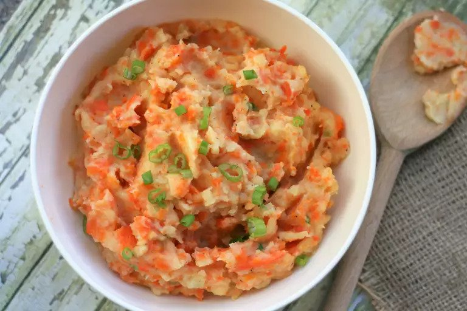

Potato and Carrot Mash with Chives

Description:
This is a delicious and hearty meal. The smoothness of the
potatoes, combined with the sweetness of the carrot and
the bite the chives provide will delight your mouth and belly.
Great to eat on its own, or couple it with bangers and gravy.
Ingredients:
- 3 potatoes
- 1 large carrot
- 1.5 liters water
- 1/4 cup soy or preferred milk
- salt and pepper (a pinch of each, to taste)
- knob of margarine or butter (optional)
- 1 spring onion (garnish)
Steps:
- Cut potatoes and carrots into small cubes
- Place veggies and water into medium size pot and bring to a boil
- Cook until carrot is soft (about 15 minutes)
- Drain water and mash veggies, while adding milk, butter, and spices
- Dice up the onion into chives and sprinkle on top of each serving